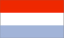
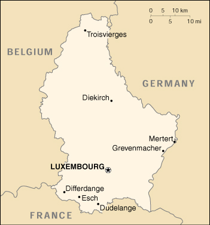

{kind=link}


| Luxembourg |  |
|
|  | |
| Introduction |
Background: Founded in 963, Luxembourg became a grand duchy in 1815 and an independent state under the Netherlands. It lost more than half of its territory to Belgium in 1839, but gained a larger measure of autonomy. Full independence was attained in 1867. Overrun by Germany in both World Wars, it ended its neutrality in 1948 when it entered into the Benelux Customs Union and when it joined NATO the following year. In 1957, Luxembourg became one of the six founding countries of the European Economic Community (later the European Union) and in 1999 it joined the euro currency area.
| Geography |
Location: Western Europe, between France and Germany
Geographic coordinates: 49 45 N, 6 10 E
Map references: Europe
Area:
total:
2,586 sq km
land:
2,586 sq km
water:
0 sq km
Area - comparative: slightly smaller than Rhode Island
Land boundaries:
total:
359 km
border countries:
Belgium 148 km, France 73 km, Germany 138 km
Coastline: 0 km (landlocked)
Maritime claims: none (landlocked)
Climate: modified continental with mild winters, cool summers
Terrain: mostly gently rolling uplands with broad, shallow valleys; uplands to slightly mountainous in the north; steep slope down to Moselle flood plain in the southeast
Elevation extremes:
lowest point:
Moselle River 133 m
highest point:
Burgplatz 559 m
Natural resources: iron ore (no longer exploited), arable land
Land use:
arable land:
24%
permanent crops:
1%
permanent pastures:
20%
forests and woodland:
21%
other:
34%
Irrigated land: 10 sq km (including Belgium) (1993 est.)
Natural hazards: NA
Environment - current issues: air and water pollution in urban areas
Environment - international agreements:
party to:
Air Pollution, Air Pollution-Nitrogen Oxides, Air Pollution-Sulphur 85, Air Pollution-Sulphur 94, Air Pollution-Volatile Organic Compounds, Biodiversity, Climate Change, Desertification, Endangered Species, Hazardous Wastes, Marine Dumping, Nuclear Test Ban, Ozone Layer Protection, Ship Pollution, Tropical Timber 83, Tropical Timber 94, Wetlands
signed, but not ratified:
Air Pollution-Persistent Organic Pollutants, Climate Change-Kyoto Protocol, Environmental Modification, Law of the Sea
Geography - note: landlocked
| People |
Population: 437,389 (July 2000 est.)
Age structure:
0-14 years:
19% (male 42,375; female 40,109)
15-64 years:
67% (male 148,205; female 145,325)
65 years and over:
14% (male 24,446; female 36,929) (2000 est.)
Population growth rate: 1.27% (2000 est.)
Birth rate: 12.45 births/1,000 population (2000 est.)
Death rate: 8.91 deaths/1,000 population (2000 est.)
Net migration rate: 9.21 migrant(s)/1,000 population (2000 est.)
Sex ratio:
at birth:
1.03 male(s)/female
under 15 years:
1.06 male(s)/female
15-64 years:
1.02 male(s)/female
65 years and over:
0.66 male(s)/female
total population:
0.97 male(s)/female (2000 est.)
Infant mortality rate: 4.83 deaths/1,000 live births (2000 est.)
Life expectancy at birth:
total population:
77.13 years
male:
73.84 years
female:
80.63 years (2000 est.)
Total fertility rate: 1.7 children born/woman (2000 est.)
Nationality:
noun:
Luxembourger(s)
adjective:
Luxembourg
Ethnic groups: Celtic base (with French and German blend), Portuguese, Italian, and European (guest and worker residents)
Religions: Roman Catholic 97%, Protestant and Jewish 3%
Languages: Luxembourgian, German, French, English
Literacy:
definition:
age 15 and over can read and write
total population:
100%
male:
100%
female:
100% (1980 est.)
| Government |
Country name:
conventional long form:
Grand Duchy of Luxembourg
conventional short form:
Luxembourg
local long form:
Grand-Duche de Luxembourg
local short form:
Luxembourg
Data code: LU
Government type: constitutional monarchy
Capital: Luxembourg
Administrative divisions: 3 districts; Diekirch, Grevenmacher, Luxembourg
Independence: 1839 (from the Netherlands)
National holiday: National Day, 23 June (1921) (public celebration of the Grand Duke's birthday)
Constitution: 17 October 1868, occasional revisions
Legal system: based on civil law system; accepts compulsory ICJ jurisdiction
Suffrage: 18 years of age; universal and compulsory
Executive branch:
chief of state:
Grand Duke JEAN (since 12 November 1964); Heir Apparent Prince HENRI (son of the monarch, born 16 April 1955); note - Grand Duke JEAN intends to abdicate in September 2000 in favor of his oldest son, Prince HENRI
head of government:
Prime Minister Jean-Claude JUNCKER (since 1 January 1995) and Vice Prime Minister Lydie POLFER (since 7 August 1999)
cabinet:
Council of Ministers recommended by the prime minister and appointed by the monarch
elections:
none; the monarch is hereditary; prime minister and vice prime minister appointed by the monarch, following popular election to the Chamber of Deputies; they are responsible to the Chamber of Deputies
note:
government coalition - CSV and DP
Legislative branch:
unicameral Chamber of Deputies or Chambre des Deputes (60 seats; members are elected by direct popular vote to serve five-year terms)
elections:
last held 13 June 1999 (next to be held by NA June 2004)
election results:
percent of vote by party - CSV 29.79%, DP 21.58%, LSAP 23.75%, ADR 10.36%, Green Party 9.09%, the Left 3.77%; seats by party - CSV 19, DP 15, LSAP 13, ADR 6, Green Party 5, the Left 2
note:
the Council of State or Conseil d'Etat, which has 21 members who are appointed for life, is an advisory body whose views are considered by the Chamber of Deputies
Judicial branch: Superior Court of Justice or Cour Superieure de Justice, judges are appointed for life by the monarch; Administrative Court or Tribunale Administratin, judges are appointed for life by the monarch
Political parties and leaders: Action Committee for Democracy and Pension Rights or ADR [Robert MEHLEN]; Christian Social People's Party or CSV [Erna HENNICOT-SCHOEPGES]; Democratic Party or DP [Lydie POLFER]; Green Party [Jean HUSS]; Luxembourg Socialist Workers' Party or LSAP [Jean ASSELBORN]; Marxist and Reformed Communist Party DEI LENK (the Left) [Andre HOFFMAN]; other minor parties
Political pressure groups and leaders: ABBL (bankers' association); ALEBA (financial sector trade union); Centrale Paysanne (federation of agricultural producers); CEP (professional sector chamber); CGFP (trade union representing civil service); Chambre de Commerce (Chamber of Commerce); Chambre des Metiers (Chamber of Artisans); FEDIL (federation of industrialists); LCGP (center-right trade union); OGBL (center-left trade union)
International organization participation: ACCT, Australia Group, Benelux, CCC, CE, EAPC, EBRD, ECE, EIB, EMU, EU, FAO, IAEA, IBRD, ICAO, ICC, ICFTU, ICRM, IDA, IEA, IFAD, IFC, IFRCS, ILO, IMF, IMO, Intelsat, Interpol, IOC, IOM, ISO, ITU, NATO, NEA, NSG, OECD, OPCW, OSCE, PCA, UN, UNCTAD, UNESCO, UNIDO, UPU, WCL, WEU, WHO, WIPO, WMO, WTrO, ZC
Diplomatic representation in the US:
chief of mission:
Ambassador Arlette CONZEMIUS
chancery:
2200 Massachusetts Avenue NW, Washington, DC 20006
telephone:
[1] (202) 265-4171
FAX:
[1] (202) 328-8270
consulate(s) general:
New York and San Francisco
Diplomatic representation from the US:
chief of mission:
Ambassador James C. HORMEL
embassy:
22 Boulevard Emmanuel-Servais, L-2535 Luxembourg City
mailing address:
American Embassy Luxembourg, Unit 1410, APO AE 09126-1410 (official mail); American Embassy Luxembourg, PSC 9, Box 9500, APO AE 09123 (personal mail)
telephone:
[352] 46 01 23
FAX:
[352] 46 14 01
Flag description: three equal horizontal bands of red (top), white, and light blue; similar to the flag of the Netherlands, which uses a darker blue and is shorter; design was based on the flag of France
| Economy |
Economy - overview: The stable, high-income economy features moderate growth, low inflation, and low unemployment. The industrial sector, until recently dominated by steel, has become increasingly more diversified to include chemicals, rubber, and other products. During the past decades, growth in the financial sector has more than compensated for the decline in steel. Services, especially banking, account for a growing proportion of the economy. Agriculture is based on small family-owned farms. Luxembourg has especially close trade and financial ties to Belgium and the Netherlands, and as a member of the EU, enjoys the advantages of the open European market. It joined with 10 other EU members to launch the euro on 1 January 1999.
GDP: purchasing power parity - $14.7 billion (1999 est.)
GDP - real growth rate: 4.2% (1999 est.)
GDP - per capita: purchasing power parity - $34,200 (1999 est.)
GDP - composition by sector:
agriculture:
1%
industry:
23%
services:
76% (1999 est.)
Population below poverty line: NA%
Household income or consumption by percentage share:
lowest 10%:
NA%
highest 10%:
NA%
Inflation rate (consumer prices): 1.1% (1999 est.)
Labor force: 236,400 (one-third of labor force is foreign workers, mostly from Portugal, Italy, France, Belgium, and Germany) (1998 est.)
Labor force - by occupation: services 83.2%, industry 14.3%, agriculture 2.5% (1998 est.)
Unemployment rate: 2.7% (1999 est.)
Budget:
revenues:
$4.73 billion
expenditures:
$4.71 billion, including capital expenditures of $NA (2000 est.)
Industries: banking, iron and steel, food processing, chemicals, metal products, engineering, tires, glass, aluminum
Industrial production growth rate: 1.6% (1999 est.)
Electricity - production: 382 million kWh (1998)
Electricity - production by source:
fossil fuel:
60.73%
hydro:
24.86%
nuclear:
0%
other:
14.41% (1998)
Electricity - consumption: 5.856 billion kWh (1998)
Electricity - exports: 900 million kWh (1998)
Electricity - imports: 6.4 billion kWh (1998)
Agriculture - products: barley, oats, potatoes, wheat, fruits, wine grapes; livestock products
Exports: $7.5 billion (f.o.b., 1998)
Exports - commodities: finished steel products, chemicals, rubber products, glass, aluminum, other industrial products
Exports - partners: Germany 33%, France 20%, Belgium 12%, UK 6%, US 5%, Netherlands 4% (1998)
Imports: $9.6 billion (c.i.f., 1998)
Imports - commodities: minerals, metals, foodstuffs, quality consumer goods
Imports - partners: Belgium 36%, Germany 27%, France 12%, Netherlands 5%, US 4% (1998)
Debt - external: $NA
Economic aid - donor: ODA, $160 million (1999)
Currency: 1 Luxembourg franc (LuxF) = 100 centimes; note - centimes no longer in use
Exchange rates:
euros per US$1 - 0.9867 (January 2000), 0.9386 (1999); Luxembourg francs (LuxF) per US$1 - 34.77 (January 1999), 36.299 (1998), 35.774 (1997), 30.962 (1996), 29.480 (1995); note - the Luxembourg franc is at par with the Belgian franc, which circulates freely in Luxembourg
note:
on 1 January 1999, the EU introduced a common currency that is now being used by financial institutions in some member countries at a fixed rate of 40.3399 francs per euro; the euro will replace the local currency in consenting countries for all transactions in 2002
Fiscal year: calendar year
| Communications |
Telephones - main lines in use: 314,700 (1999)
Telephones - mobile cellular: 95,400 (1999)
Telephone system:
highly developed, completely automated and efficient system, mainly buried cables
domestic:
nationwide cellular telephone system; buried cable
international:
3 channels leased on TAT-6 coaxial submarine cable (Europe to North America)
Radio broadcast stations: AM 2, FM 9, shortwave 2 (1999)
Radios: 285,000 (1997)
Television broadcast stations: 8 (1999)
Televisions: 285,000 (1998 est.)
Internet Service Providers (ISPs): 13 (1999)
| Transportation |
Railways:
total:
274 km
standard gauge:
274 km 1.435-m gauge (242 km electrified; 178 km double track) (1998)
Highways:
total:
5,166 km
paved:
5,166 km (including 118 km of expressways)
unpaved:
0 km (1998 est.)
Waterways: 37 km; Moselle
Pipelines: petroleum products 48 km
Ports and harbors: Mertert
Merchant marine:
total:
48 ships (1,000 GRT or over) totaling 1,283,738 GRT/1,872,071 DWT
ships by type:
bulk 2, chemical tanker 10, container 1, liquified gas 18, passenger 4, petroleum tanker 6, roll-on/roll-off 7 (1999 est.)
Airports: 2 (1999 est.)
Airports - with paved runways:
total:
1
over 3,047 m:
1 (1999 est.)
Airports - with unpaved runways:
total:
1
under 914 m:
1 (1999 est.)
| Military |
Military branches: Army; note - the new government abolished the Gendarmerie
Military manpower - military age: 19 years of age
Military manpower - availability:
males age 15-49:
111,882 (2000 est.)
Military manpower - fit for military service:
males age 15-49:
92,238 (2000 est.)
Military manpower - reaching military age annually:
males:
2,563 (2000 est.)
Military expenditures - dollar figure: $131 million (FY98)
Military expenditures - percent of GDP: 1% (FY98)
| Transnational Issues |
Disputes - international: none